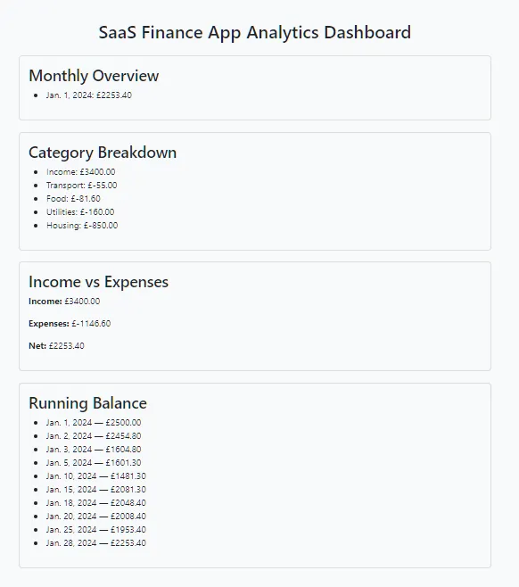
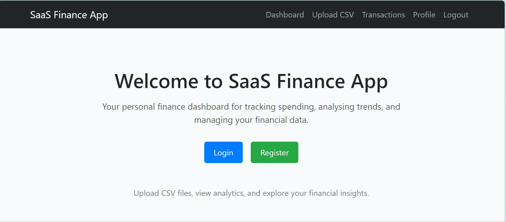
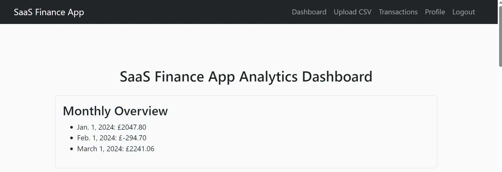
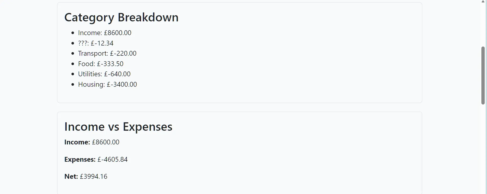
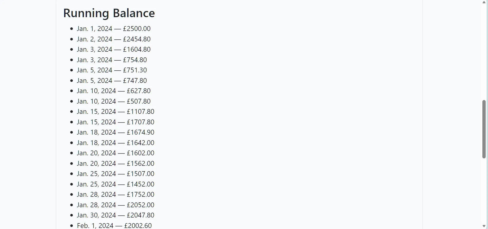
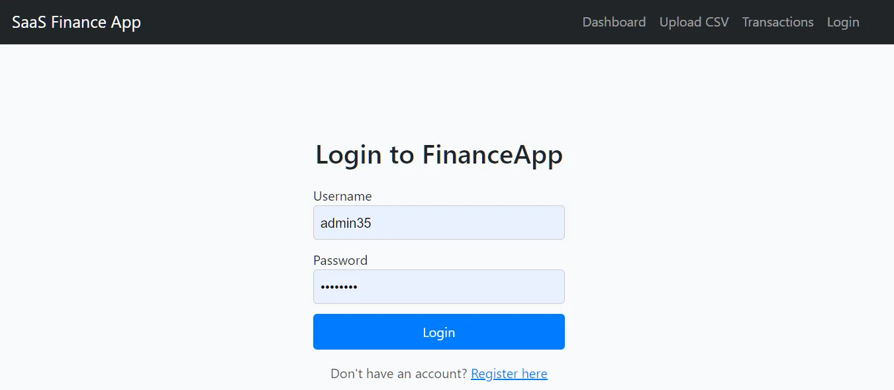
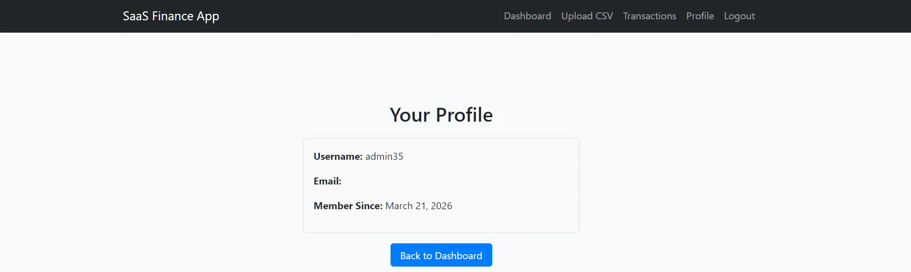
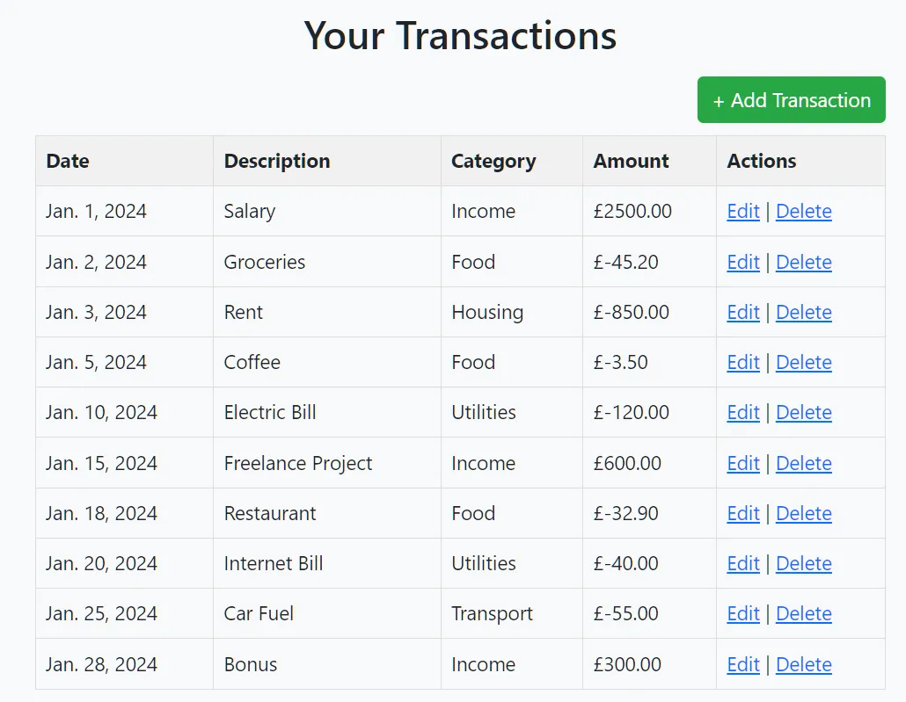
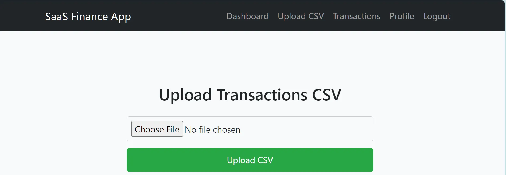
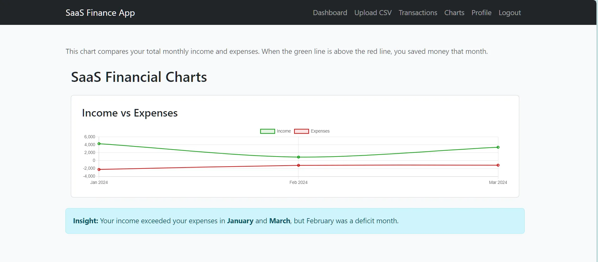

Finance App
📌 Overview


💰 SaaS FinanceApp
A modular, pipeline‑driven finance analytics SaaS built with Django & PostgreSQL
FinanceApp is a full‑stack personal finance analytics platform designed to ingest messy real‑world bank CSVs, clean and normalise the data, and present clear financial insights through dashboards, charts, and transaction management tools.
This is Version 1, focused on correctness, stability, modularity, and a clean user experience. The architecture is intentionally scalable, with a dedicated ingestion pipeline, logging system, and multi‑app layout.
🚀 Key Features
📸Screenshots










📹Demo Video
⚙️ Tech Stack
- Django
- PostgreSQL
- Pytest
- Pydantic
- Modular multi‑app architecture
🔐 Secure User Accounts (accounts app)
User registration, login, logout
Profile management
Per‑user data isolation
CSRF‑protected forms
Redirect‑safe authentication flow
💸 Transaction Management (analytics app)
Add, edit, delete transactions
Category normalisation
Clean currency formatting
Paginated transaction list
Per‑user transaction storage in PostgreSQL
📊 Dashboard & Analytics
Monthly summaries
Category totals
Date‑range analytics
Chart rendering (via chart.py)
Clean UI templates for dashboards and charts
📥 CSV Upload & Ingestion Pipeline
This is the heart of SaaS FinanceApp. FinanceApp includes a two‑stage ingestion pipeline:
🧼 Stage 1 — CSVCleaner
A production‑grade cleaning engine that:
Handles messy CSV exports
Normalises dates into ISO format
Converts amounts into floats
Cleans categories (title‑case, typo fixes)
🏗️ Stage 2 — CSVImporter
A safe importer that:
Accepts cleaned, validated rows
Saves them to PostgreSQL
Reports any remaining issues
Guarantees no type errors or crashes
Integrates with Django ORM cleanly
The project is structured into multiple Django apps, each with a clear responsibility:
accounts/ → Authentication, profiles
apps/
analytics/ → Transactions, dashboards, CSV ingestion
logs/ → Logging system (analytics, pipeline, security)
pipeline/ → Future pipeline engine (categorizer, cleaner, normalizer)
uploads/ → Generic upload system (future expansion)
csv_data/ → Test CSVs
finance_app/ → Project-level config (settings, URLs, WSGI)
settings/ → Environment-specific settings (base/dev/prod)
templates/ → Global templates (login, register, base layout)
🗄️ Database
FinanceApp uses PostgreSQL in development and production.
Environment variables (from .env):
DB_NAME=finance_app
DB_USER=postgres
DB_PASSWORD=yourpassword
DB_HOST=localhost
DB_PORT=5432
🧩 Logging System (apps/logs/)
A dedicated logging subsystem with:
- analytics_logger.py
- pipeline_logger.py
- security_logger.py
- base.py
This allows:
- pipeline step logging
- error tracking
- security event logging
- analytics access logging
🧹 Example Cleaner Output
When uploading a messy CSV, the app might show:
Some rows were skipped during cleaning:
["Row 1: Invalid amount ' £2'",
"Row 14: Invalid date format 'date'",
"Row 15: Invalid amount '£2500'",
"Row 35: Missing date"]
Valid rows are imported cleanly and appear in the dashboard.
🛠️ Installation
- ## Clone the repo
git clone https://github.com/reory/finance_app.git
cd finance_app
- ## Create a virtual environment
python -m venv venv
source venv/Scripts\activate # Windows
source venv\bin\activate # Mac/Linux
- ## Install dependencies
pip install -r requirements.txt
- ## Configure environment variables Create a .env file in the project root:
DEBUG=True
SECRET_KEY=your-secret-key
DB_NAME=finance_app
DB_USER=postgres
DB_PASSWORD=yourpassword
DB_HOST=localhost
DB_PORT=5432
- Run migrations
python manage.py migrate
- Start the server
python manage.py runserver
🎯 Version 1 Goals Achieved
Modular Django architecture
PostgreSQL-backed data storage
Robust CSV ingestion pipeline
Clean UI for transactions
Dashboard analytics
Logging system
Authentication system
Error‑tolerant CSV cleaning
This is a complete, functional SaaS foundation.
🧪 Testing
This project includes a small, focused test suite that covers the critical paths of the backend:
CSV Cleaner – validates incoming CSV rows and rejects invalid data
CSV Importer – safely writes cleaned rows into the database
Transaction Model – ensures the ORM model stores values correctly
Schema & Field Validation – confirms required fields are present and correctly mapped
These tests ensure that the ingestion pipeline is stable, predictable, and safe to extend
▶️ Run the Pytest suite:
pytest -q
🛣️ Roadmap
[] Category inference
[] Duplicate transaction detection
[] Chart visualisations (Altair, Chart.js, or Plotly)
[] Export to CSV
[] Multi‑currency support
[] Bank‑specific import presets
[] Dashboard widgets
[] API endpoints (REST or GraphQL)
[] Background tasks (Celery or RQ)
🏁 Final Notes
This app manages real‑world data, provides meaningful analytics, and is built with clean, maintainable Django architecture.
- Built by Roy Peters 😁